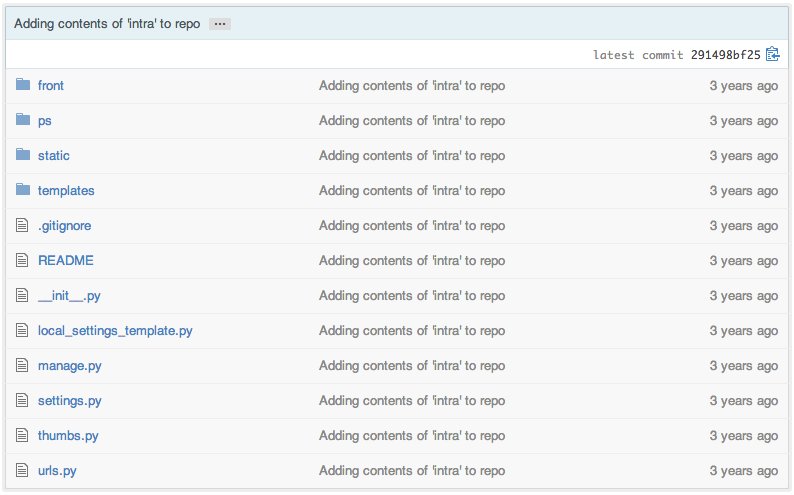
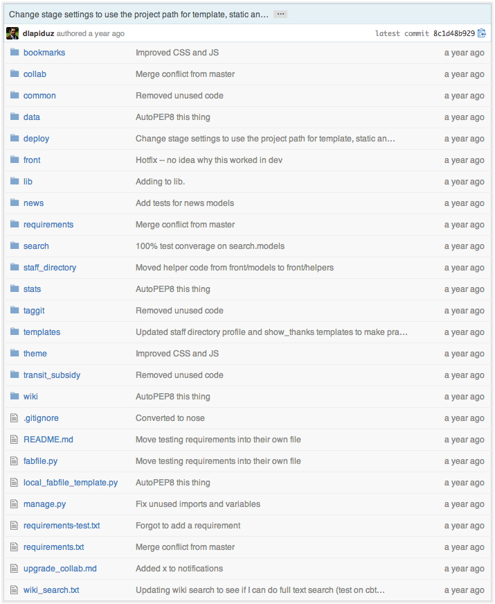
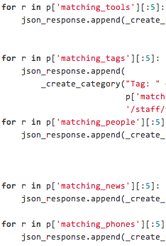

collab
A Django construction kit/template for apps
I know something like that...

That is where we started

And then there was noise

And more noise

Core + Apps
Core provides services
Apps follow (light) standards
Core Services
Search
Haystack
search_indexes.py
from haystack import indexes
from core.models import Person
class PersonIndex(indexes.SearchIndex, indexes.Indexable):
text = indexes.EdgeNgramField(document=True, use_template=True)
user = indexes.CharField(model_attr='user')
display = indexes.CharField(model_attr='full_name', null=True)
description = indexes.CharField(model_attr='title', null=True)
index_name = indexes.CharField(indexed=False)
index_priority = indexes.IntegerField(indexed=False)
index_sort = indexes.IntegerField(indexed=False, null=True)
url = indexes.CharField(indexed=False, null=True)
PRIORITY = 1
def prepare_index_name(self, obj):
return "Staff Directory"
def prepare_index_priority(self, obj):
# Return 1 to display Staff Directory as first search result category
return self.PRIORITY
def prepare_index_sort(self, obj):
# sort results by last name
for index, item in enumerate(self.index_queryset().order_by("user__last_name")):
if item.id == obj.id:
return index
def prepare_url(self, obj):
return obj.get_absolute_url()
def get_model(self):
return Person
def index_queryset(self, using=None):
"""Used when the entire index for model is updated."""
return self.get_model().objects.filter(user__is_active=True)
Widgets
django-widgeter
widgets.py
from widgeter.base import Widget
class HelloWorld(Widget):
block = 'home_side'
priority = '1'
template = 'hello_world/widget.html'
def get_context(self, context, options=None):
return { 'message': u'Hello World!' }
Tagging
django-taggit
Notifications
Improved Caching
django-cache-tools
Libraries
- fabistrano
- django-widgeter
- django-cache-tools